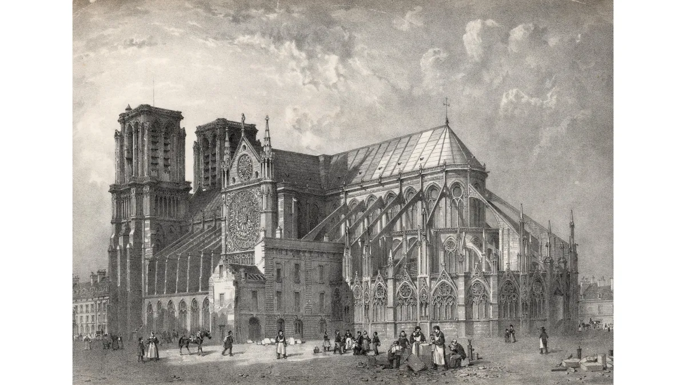

1163arrow_back
Notre Dame Cathedral
Construction began in 1163 on Île de la Cité, under the reign of King Louis VII, and the cathedral was largely completed by 1345, although many modifications and additions were made over the following centuries.
mid 13th centuryarrow_back
Sainte Chapelle
It was built in the mid 13th century by Louis IX, at the heart of the royal residence, the Palais de la Cité, to house the relics of the Passion of Christ.
1671arrow_back

Les Invalides
The enormous range of buildings was completed in five years (1671–76). The gold-plated dome (1675–1706) that rises above the hospital buildings belongs to the church of Saint-Louis.
1757arrow_back
Place de la Concorde
Created in 1772, Place de la Concorde was originally known for having been an execution site during the French Revolution. Louis XVI and Marie-Antoinette (among others) were guillotined here.
1980arrow_back

Crypte Archeologique
Built in 1980 under the forecourt of Notre-Dame de Paris cathedral to present the archaeological remains discovered during excavations carried out between 1965 and 1972, the Crypt offers a unique panorama of the urban and architectural evolution of the Ile de la Cité, the historic heart of ancient Paris.
arrow_forward1190
Musee du Louvre
The Louvre was originally built as a fortress in 1190, but was reconstructed in the 16th century to serve as a royal palace.
arrow_forward1350
La Conciergerie
Built between 1350 and 1353, the tower is the tallest (47m tall). Since 1371 it has housed the remarkable clock whose purpose was to help Parisians regular their activities during the day and night.
arrow_forwardeighteenth century
Catacombs Of Paris
The history of the Paris Catacombs starts in the late eighteenth century, when major public health problems tied to the city's cemeteries led to a decision to transfer their contents to an underground site.
arrow_forwardJanuary 28, 1887
Eiffel Tower
The assembly of the Tower was a marvel of precision, as all chroniclers of the period agree. The construction work began in January 1887 and was finished on March 31, 1889. It only took five months to build the foundations and twenty-one to finish assembling the metal pieces of the Tower.